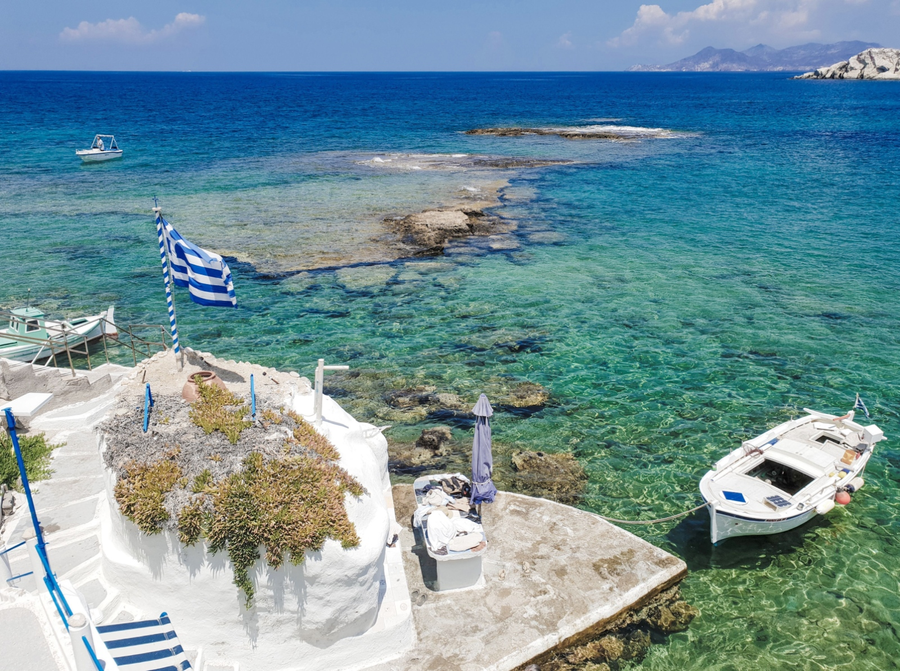
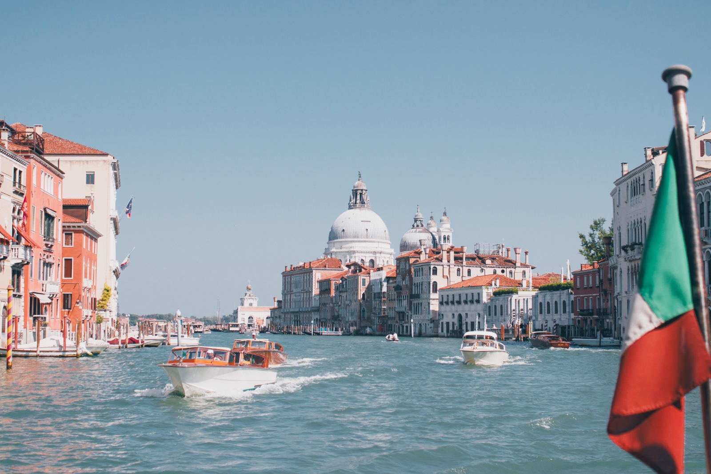

Podróże zaczynają się od inspiracji
PlayaTravel powstało z myślą o osobach, które szukają pomysłów na wakacje, krótki city break lub dalszą podróż. Zbieramy inspiracje dotyczące ciekawych miejsc w Polsce, Europie i bardziej odległych zakątkach świata.
Interesują nas zarówno popularne kierunki wakacyjne, jak i miejsca, które nie zawsze pojawiają się na pierwszych stronach przewodników. Podpowiadamy, gdzie warto pojechać, czego szukać przed wyjazdem i na co zwrócić uwagę podczas planowania podróży.
Wakacje, hotele i ciekawe miejsca
Na PlayaTravel znajdziesz treści związane z wypoczynkiem nad morzem, podróżami po Europie, egzotycznymi kierunkami, hotelami, rejsami oraz krótkimi wyjazdami do miast. Chcemy ułatwiać odkrywanie nowych miejsc i pierwszy etap planowania wyjazdu.

Odkrywaj z PlayaTravel
Więcej inspiracji podróżniczych oraz możliwości wyszukiwania ofert znajdziesz w serwisie PlayaTravel.